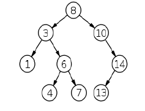

Preorder : A B C D H E I J P Q F K L M G N
6. Write the Postorder traversal of general trees?
- Traverse First subtree using Postorder traversal
- Traverse the Second subtree using postorder traversal
- Continue this till last subtree using postorder traversal
- Display the data part of the root (or current node).
Postorder : B C H D I P Q J E K L M F N G A
7. Define Binary Trees?
- A binary tree is a tree in which no node can have more than two children.
- A node can have both left and right child or left child only or right child only or no children
- The tree made up of a left child (of a node x) and all its descendents is called the left subtree of x
- Similar the tree made up of a right child (of a node x) and all its descendents is called the right subtree of x
8. What is meant by full binary tree? Give example?
- A full binary tree (also called as proper or plane binary tree) is a tree in which every node in the tree has either 0 or 2 children.
9. What is meant by complete binary tree? Give example?
- A complete binary tree is a tree that is completely filled, with the possible exception of the bottom level, which is filled from left to right.A complete binary tree of height h has between 2h and 2h+1 - 1 nodes.
10. Write down the binary tree traversal techniques?
- Preorder Traversal
- Inorder Traversal
- Postorder Traversal
11. Write the preorder traversal of binary trees?
In Preorder, the root is visited before (pre) the subtrees
- 1. Visit and display the content of root
- 2. Traverse left subtree in preorder
- 3. Traverse right subtree in preorder
Preorder: a b c e k h j m d f i g
12. Write the inorder traversal of binary trees?
In Inorder, the root is visited in-between left and right subtree traversal
- 1. Traverse left subtree using inorder traversal
- 2. Visit the root
- 3. Traverse right subtreeusing inorder traversal.
Inorder : c b h k j e m a f d h i
13. Write the postorder traversal of binary trees?
In Postorder, the root is visited after the subtrees traversals
- 1. Visit the root
- 2. Traverse left subtree in postorder
- 3. Traverse right subtree in postorder
Postorder : c h j k m e b f g i d a
14. Define Expression tree?
- Expression tree is a binary tree in which leaves represents operands, such as variables and constant names and other node contains operators.
- The inorder, postorder, preorder traversal of expression tree will produce infix, postfix and prefix notation for the expression under consideration.
- Ex : Expression tree for (a + b * c) + ((d * e + f ) * g) is as follows
15. Define binary search tree?
- A binary search tree is a special binary tree, which is either empty or it should satisfy the following characteristics:
- Every node has a value and no two nodes should have the same value. It means the values in the binary search tree are distinct
- The values in any left sub-tree is less than the value of its parent node
- The values in any right sub-tree is greater than the value of its parent node
- The left and right sub-trees of each node are again binary search trees

16. Why it is said that searching a node in a binary search tree is efficient than in simple binary tree?
- In binary search tree, the nodes are arranged in such a way that all nodes in left subtree have values less than root value and similarly all nodes in right subtree have values greater than root value.
- While searching for any node value,it will be compared with the parent node and accordingly either left subbranch or right sub branch will be searched.
- So, search is restricted to one of the subtree at every level and this makes search efficient compared to binary node in which all nodes should be compared since a match is found.
17. There are 8, 15, 13, 14 nodes in 4 different trees. Which of them could form a full binary tree?
- Reason : In general, there are 2n-1 nodes in a full binary tree. By the method of elimination, fullbinary trees contain odd number of nodes. So there cannot be full binary trees with 8 or 14 nodes. With 13 nodes, one can form a complete binary tree but not a full binary tree. So the correct answer is 15.
Ans: 15
18. Create the binary search tree for the input : 8, 3, 6, 10, 14, 1, 4, 13, 7
19. Write the C coding for find operation in a BST?
struct treenode*
find( int x, structtreenode* T )
{
if( T == NULL )
return NULL;
if( x < T->element )
return( find( x, T->left ) );
else if( x > T->element )
return( find( x, T->right ) );
else // element is found
return T;
}
20. Write the C coding for finding minimum element in a BST?
- To perform a find_min, start at the root and go left as long as there is a left child.
- The stopping point is the smallest element.
structtreenode* find_min( structtreenode* T ) { if( T == NULL ) return NULL; else if( T->left == NULL ) return( T ); else return(find_min ( T->left ) ); }
21. Write the C coding for finding maximum element in a BST?
- To perform a find_max, start at the root and go right as long as there is a right child.
- The stopping point is the largest element.
structtreenode* find_max( structtreenode* T ) { if( T == NULL ) return NULL; else if( T->right == NULL ) return( T ); else return(find_max ( T->right ) ); }
22. Write down the applications of BST?
- Implementation of dictionaries
- Priority Queues
- Searching Sorting
- Map and set objects in many programming languages' libraries.
23. Define AVL trees?
- An AVL (Adelson-Velskii and Landis) tree is identical to a binary search tree, except that for every node in the tree, the height of the left and right subtree can differ by at most 1.
- Here, height of an empty tree is defined to be -1 and height of a leaf node is 0.
- If imbalance occurs at any node, rebalancing is done through rotations to restore balancing property
24. Name the rotations in AVL tree?
- Single Rotation
- 1. Right Rotation (Left subtree has more height)
- 2. Left Rotation (Right subtree has more height)
- Double Rotation
- 1. Left-right rotation
- 2. Right-left rotation
25. Write down the applications of AVL trees?
- AVL trees are beneficial in database where insertions and deletionsare not that frequentbut look-up may be very frequent for the items. Ex - data mining and in data analytics.
- Dictionaries
26. What is a balance factor in binary tree?
- The balance factor of a binary tree is the difference in heights of its left and right subtrees. The balancefactor (bf) of a height-balanced binary tree may take on one of the values -1, 0, +1.
27. What is meant by B-tree of order m?
- A B-tree of order m is an m-way tree (i.e., a tree where each node may have up to m children) in which:
- 1. Number of keys (max - m-1) in each non-leaf node is one less than the number of its children (max - m) and these keys partition the keys in the children in the fashion of a search tree
- 2. All leaves are on the same level
- 3. All non-leaf nodes except the root have at least
- 4. The root is either a leaf node, or it has from two to m children
- 5. A leaf node contains no more than m - 1 keys
- The number m should is preferably to be odd
28. State the applications of B-trees?
- Modern filesystems use B-trees to allow quick random access to an arbitrary block in a particular file.
- Used in core indexing data structure in many database management systems